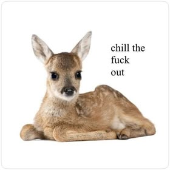

About Me
About Me


✨ Current Mood: Romanticizing life
🎧 Listening to: The Marias
Hi, I'm glad you're here! ✿
Hiyaaa! Welcome to my little corner of the internet. I started this blog as a carefree space to archive my thoughts, keep track of my favorite music, and curate outfit lookbooks that match my favorite aesthetics. It's inspired by sugarcoateddiary.com ♡
A Few of My Favorite Things:
- 🍓 Berries and quiet days
- 📷 🎞️ Collecting cds and memories
- 🎀 🩰 Styling my closet and daydreaming
Feel free to look around, explore my picks, or drop a note on my contact page if you want to say hi!